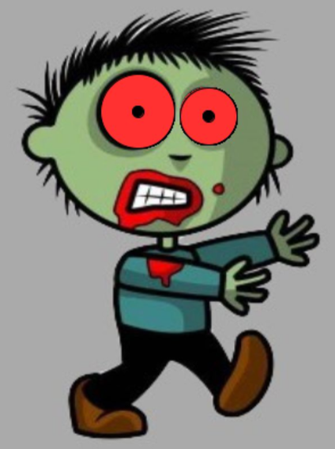

Zombie Eyes

We’re going to make a face with color-changing eyes!
- Create a new sketch in Processing and add setup() and draw() methods.
- Find an image of a face on google. It could be a zombie, a cat, or whatever you like.
- Drop your image into your Processing sketch.
- Load your image in your setup() method using the following code:
PImage face = loadImage(“face.jpg”);
image(face, 0, 0);
- Change the code you just entered so that “face.jpg” is the same as the name of your image.
- Set the size of your sketch and the size of your image to be the same. Enter the following code in between the previous two you entered:
size(800, 600);
face.resize(width, height);
- In your draw() method, place two ellipses over the eyes.
- Give the irises a color using fill(int red, int green, int blue).
- Change your fill command so that the color of the eyes changes when you move the mouse.
Hint: use mouseX and mouseY.
- Draw black pupils on the irises.